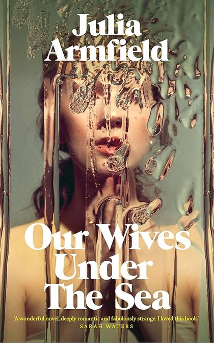

our wives under the sea
Picador
Listen
Listen on AudibleMonthly pick or purchase · English editionListen on StorytelIncluded in the subscription · English editionListen on BookBeatIncluded in the subscription · English edition
Links and plan info checked 24 November 2026